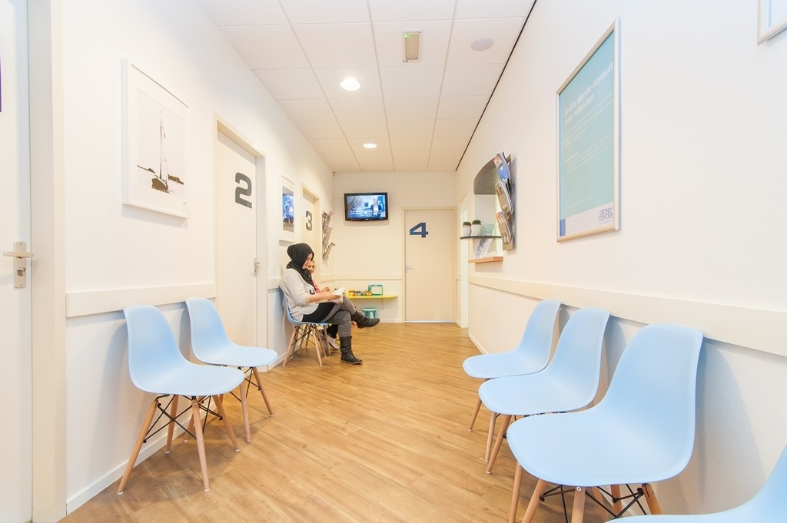
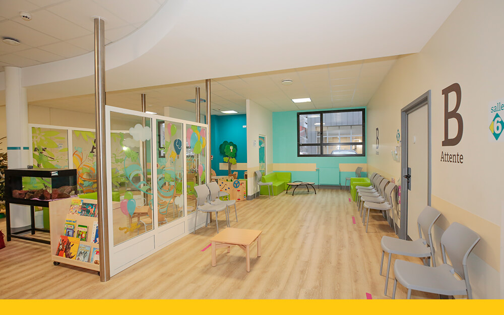
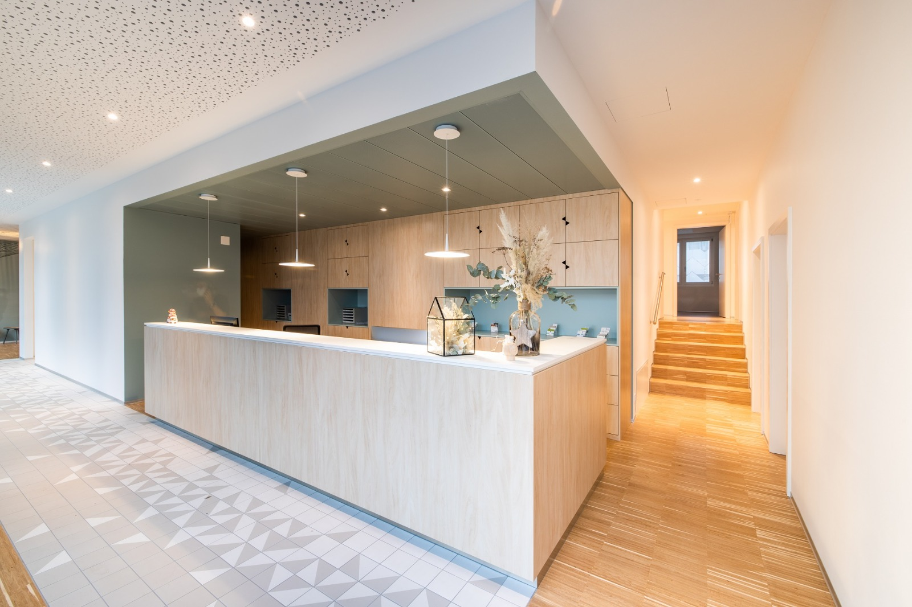

Suivi de routine
Examens de bébé, bilans de croissance, dépistages du développement à chaque âge clé.
Pédiatrie générale · 0 à 17 ans · Laval
Bilans de croissance, vaccins, petits bobos ou grosses inquiétudes de 3h du matin : le Dr Djoolliany suit vos enfants de la naissance à leurs 17 ans, dans un cabinet où on prend le temps de vraiment discuter avant d'ouvrir un carnet de santé.
Le cabinet
Le Dr Dor Djoolliany pratique à Laval depuis plus de quinze ans, et une chose n'a pas changé avec l'expérience : elle prend le temps. Le temps de comprendre ce qui inquiète les parents, d'observer l'enfant sans se presser, et d'expliquer ce qui se passe avec des mots qu'on comprend vraiment — pas juste un chiffre sur une courbe.
Le cabinet suit les enfants de la naissance à 17 ans : les rendez-vous de routine comme les visites qu'on n'avait pas prévues.
Consultations
Examens de bébé, bilans de croissance, dépistages du développement à chaque âge clé.
Application du calendrier vaccinal québécois, avec explications claires avant chaque injection.
Courbes de poids, taille et développement, révisées à chaque visite et partagées avec vous.
Fièvre, infections courantes, questions urgentes : des rendez-vous rapides quand il le faut.
Suivi de la puberté, questions liées à la santé mentale et à l'autonomie des ados.
Référence rapide vers des spécialistes lorsqu'un suivi plus approfondi est nécessaire.
Notre approche
On commence toujours par parler — avec vous, et avec votre enfant dès qu'il est en âge de raconter ce qu'il ressent.
Un mot compliqué qu'on ne comprend pas, ça inquiète pour rien. On vous explique ce qu'on voit, dans nos mots à nous.
Chaque visite s'appuie sur celles d'avant. On ne repart pas de zéro à chaque fois.
Le cabinet


« On sent que le Dr Djoolliany connaît vraiment le dossier de notre fille, visite après visite. Ça change tout. »
— Parent d'une patiente de 6 ans
« Rendez-vous obtenu en deux jours pour une fièvre qui nous inquiétait. Accueil calme, explications claires. »
— Parent d'un patient de 2 ans
« Le suivi de croissance est très précis, et on repart toujours avec une explication qu'on comprend. »
— Parent d'un patient de 11 ans
Réservation
Choisissez une date, puis une plage horaire disponible. Vous recevrez une confirmation par courriel une fois la demande validée par le cabinet.
Oui, la carte RAMQ de l'enfant est requise à chaque visite. Si elle est expirée ou en renouvellement, apportez une pièce d'identité de l'enfant.
Oui, les nouvelles familles sont acceptées selon les places disponibles. Indiquez-le dans le champ « message » de votre demande.
Pour toute urgence, contactez Info-Santé au 811 ou rendez-vous à l'urgence pédiatrique la plus proche. Ce formulaire ne remplace pas une consultation d'urgence.
Comptez environ 20 à 30 minutes pour une visite de routine, un peu plus pour un premier rendez-vous.
La carte RAMQ de l'enfant, le carnet de vaccination s'il y en a un, et toute lettre de référence si votre visite fait suite à une recommandation médicale.

Contact